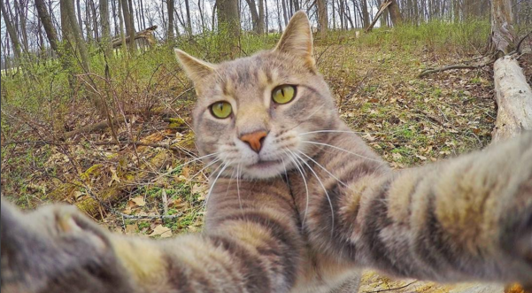

Os gatos têm um forte instinto territorial e têm a tendência de patrulhar e explorar seu território. Eles podem ser curiosos sobre qualquer alteração ou novidade em sua área, investigando cuidadosamente essas mudanças para garantir que tudo esteja em ordem.
São brincalhões, muito independentes, curiosos e conseguem ser teimosos, mas são também extremamente amigáveis e afetivos: um dos gestos mais carinhosos dos gatos é a famosa turrinha,que dão entre si e aos seus donos. Outro sinal de afeição é o não menos famoso ronronar.
